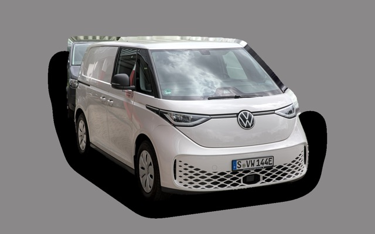

What does a Peugeot 508 SW cost per month?
A 2021 Peugeot 508 SW costs about SEK 3,894 a month, all in.
SEK 3,894per month, 2021 model
SEK 173,000price, 2021 model⚠︎
SEK 439,900last new price
Cvalue grade (2021)

_–_f_05072025.jpg){kind=link}
Monthly cost by model year
| Model year | Version in the calculation | Price | Per month | Grade |
|---|---|---|---|---|
| 2024⚠︎ | PureTech 130 automat, GT | SEK 276,000 | SEK 4,782 | D |
| 2021⚠︎ | PureTech 130 automat, GT | SEK 173,000 | SEK 3,894 | C |
Based on 5 years of ownership and 12,500 km a year, with fuel prices from 2026-10-22. The monthly cost includes depreciation, fuel, servicing and repairs, insurance and road tax.
⚠︎ Model years with a warning triangle have fewer than five ads to go on, so the price is uncertain.
How the cost splits for a 2021 car
- Depreciation: SEK 1,369/mo
- Fuel: SEK 1,293/mo
- Servicing and repairs: SEK 792/mo
- Insurance: SEK 359/mo
- Road tax: SEK 82/mo
Engines and versions
| Engine | Fuel | Power | 0–100 km/h | Consumption (WLTP) | Range | Model years | Extra cost |
|---|---|---|---|---|---|---|---|
| PureTech 130 automat | Petrol | 130 hp | 10 s | 6 l/100 km | – | 2019–2024 | – |
| BlueHDi 130 automat | Diesel | 130 hp | 10.5 s | 4.8 l/100 km | – | 2019–2024 | +SEK 15,000 |
| Laddhybrid 225 | Plug-in hybrid | 225 hp | 8.3 s | 1.4 l/100 km + 17 kWh/100 km | – | 2019–2024 | +SEK 140,000 |
- Trim: GT
Facts
- Body
- Estate
- Model years
- 2019–2024
- Last new price
- SEK 439,900
- Boot
- 530 litres
- Euro NCAP
- 5 of 5 stars
- New-car warranty
- 3 years
- Reliability
- 3 of 5
- Comprehensive insurance, estimate
- SEK 7,200/yr
- Servicing, estimate
- SEK 4,400/yr
Common faults to watch for
- Timing belt in oil breaks down (1.2 PureTech), repair about SEK 11,000
- Engine failure after belt failure, repair about SEK 50,000
- Oil consumption and carbon (1.2 PureTech), repair about SEK 3,000
The faults apply to some engines and model years. The calculator works out the risk for the exact version you choose.
Pros and cons
Pro
Stylish, low estate with a powerful plug-in hybrid.
Con
No longer sold new in Sweden, and low rear headroom.
Similar cars
 Saab 9-5 SportCombiSEK 3,887/mo as a 2007 model
Saab 9-5 SportCombiSEK 3,887/mo as a 2007 model Volvo V70 IISEK 3,828/mo as a 2007 model
Volvo V70 IISEK 3,828/mo as a 2007 model Volkswagen Passat B8SEK 4,010/mo as a 2020 model
Volkswagen Passat B8SEK 4,010/mo as a 2020 model
Volkswagen ID. BuzzSEK 4,055/mo as a 2023 model Cupra Leon SportstourerSEK 3,663/mo as a 2023 model
Cupra Leon SportstourerSEK 3,663/mo as a 2023 model Peugeot 308 SWSEK 3,654/mo as a 2023 model
Peugeot 308 SWSEK 3,654/mo as a 2023 model
Updated 2026-10-29 · ad data Oct 2026